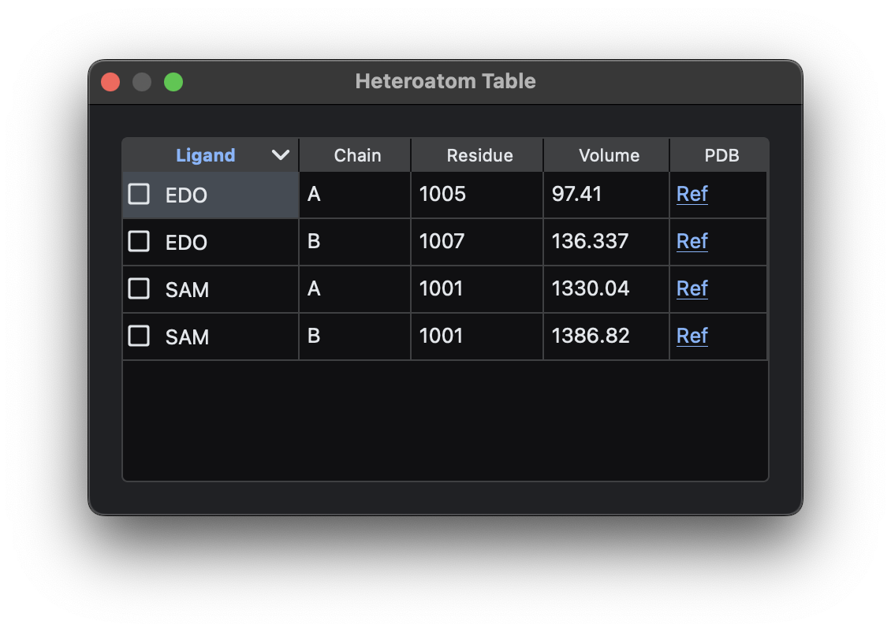

Protein Preparation & Docking¶
The Docker module is the main tool for docking preparation. It includes two primary functions: Protein Preparation and Molecular Docking.
Protein Preparation¶
Input Protein¶
Docker provides two methods for inputting protein structures: Local Import and Database Search.
Local Import¶
Supported formats:
- PDB
- CIF
- PDBQT
Database Search¶
Supported databases:
- Protein Data Bank (PDB) using PDB ID
- AlphaFold Database using UniProt ID
Before inputting the protein structure, two parameters in the Dock Utilities menu bar can be adjusted to influence protein processing:
-
Fill Gap: Default is
False. If checked, Docker will fill unresolved "gaps" in experimentally resolved structures by using the sequence provided in the PDB or CIF file. If no sequence is provided, gaps cannot be filled. Note: This gap-filling does not predict actual gap structure but provides a filler for docking purposes. Useful for blind docking with QuickVINA-W or DiffDock. -
Protein pH: Default is
7.0. This pH value is used for adding hydrogens to protein sidechains.
After inputting the protein structure, Docker processes it into docking-ready formats. Output formats include:
- PDBQT: For AutoDock VINA and its variants.
- PDB: For LeDock and DiffDock.
Configure Docking Settings¶
Docker offers an interactive interface for configuring docking parameters.
To configure settings, click the Setting button to open the settings dialog.

Select Mode¶
Determines the action applied when clicking on the protein structure:
- Center: Set the docking center at the clicked position (amino acid or atom).
- Flexible: Mark amino acids as flexible (only for AutoDock VINA and non-UniDock VINA variants).
- Disable: Disable clicking.
FPocket Table¶
FPocketWeb can identify binding pockets. To use this feature, select Dock Utilities → FPocketWeb after loading a protein. If the protein is complex, users can edit it with Protein Editing to focus on specific domains before using FPocketWeb.
After pocket searching is complete, results can be visualized in FPocketWeb and imported back into Docker. The FPocket Table in Docker displays pocket data, and clicking the checkboxes in the Pocket # column applies the pocket's center and box size.
Heteroatom Table¶
Experimentally resolved protein structures often contain docked ligands that can serve as references. Heteroatoms (excluding water, acetate, sulfate, and glycerol) are listed in the Heteroatom Table, with a 1.5 Å padding applied by default.

To apply docking coordinates and box size, select the desired ligand checkbox in the Ligand column. Clicking the Ref hyperlink in the PDB column shows detailed ligand information.
Protein Box¶
The Protein Box option calculates a bounding box that encompasses the entire protein. This is particularly useful for QuickVINA-W, which requires input docking center coordinates and box dimensions for blind docking.
Center Coordinate & Box Widths¶
Configure docking box center and dimensions. Center coordinates can be interactively set by choosing the Center option in Select Mode.
Others¶
Other parameters specific to downstream docking programs can be configured here.
Protein Editing¶
Docking is often performed on specific protein domains. Use the Protein Editing option to select chains and residues:
- Chain Selection: Check/uncheck chains (e.g., Chain A, Chain B).
-
Residue Selection: Specify residues using:
- Num1-Num2: Keep residues between
Num1andNum2. - ~SEL: Invert the selection.
- SEL1,SEL2: Select residues from
SEL1orSEL2. - SEL1&SEL2: Select residues overlapping between
SEL1andSEL2. - SEL1,(SEL2&SEL3): Process parentheses first.
- Num1-Num2: Keep residues between
Examples:
10-70: Keep residues 10 to 70.~30-40: Exclude residues 30 to 40.10-70,100-120: Keep residues 10-70 or 100-120.10-120&80-150: Keep residues 80-120.10-70,80-150,(50-180&10-100): Process parentheses first; result is residues 10-150.
Flexible Position¶
To mark residues as flexible for VINA variants:
- Use the Flexible option in Select Mode to click residues directly.
- Press Add then select corresponding chain alphabet and residue number through their respective dropdown menus.
- Press Auto to mark residues within the docking box (excluding glycine, alanine, and proline).
Docking¶
Docking can be performed locally or on cloud platforms.
Local Docking¶
Supports:
- AutoDock VINA
- smina
- QuickVINA 2
- QuickVINA-W
- LeDock (not available on Windows)
- Post-docking Refinement
Docking with VINA, VINA Variants, and LeDock¶
After preparing the protein and configuring docking settings: 1. Provide the ligand directory in Select Ligand Directory. - PDBQT format for VINA and variants. - MOL2 format for LeDock. 2. Provide an output directory in Select Output Directory.
Click Dock and select a docking program. The Concurrent parameter controls the number of parallel processes (max: CPU cores).
Docking progress is displayed in the bottom-right table. The bottom-left log displays results for each ligand.
Post-Docking Refinement¶
Save docked results in Refine Format using Save → Filtered Structure → Refine Format → Directory. Use this directory as the input for Select Ligand Directory and select Dock → Refinement to start refinement.
Cloud Docking¶
Cloud platforms offload computational resources from local systems, making them ideal for resource-intensive programs like Uni-Dock, gnina, and DiffDock. Supported platforms include:
Google Colab¶
Pros:
- Free for limited use.
- Simple setup.
- Secure (not shared).
Cons:
- Requires a Google account.
- Limited to ~2 hours of free usage per session.
- GPU memory (15 GB) of free tier may be insufficient for complex proteins.
- Limited CPU cores (1-2), slowing gnina.
Hugging Face Spaces¶
Pros:
- No user account required.
- Faster than Google Colab.
Cons:
- Shared instances (insecure when multiple users are active).
RunPod¶
Pros:
- Secure (not shared).
Cons:
- Paid service.
RunPod Setup:
- Visit RunPod.
- Log in and provide payment details.
- Deploy a pod using MolDocker_Desired Docking Program as the template.
- Connect via HTTP Service [Port 7860] to access the docking website.
Website Interaction¶
Upload the protein MDS file and ligands (zipped or CSV). For Uni-Dock and gnina, ensure ligands are zipped in the correct format (e.g., SDF for Uni-Dock, PDBQT for gnina). Use the Zip Result option in General Utilities to zip files.
Checking the Zip Result checkbox will initiate the zipping process for the current docked directory. Once the files are zipped, users can download the zipped file from the file box below. To unzip and merge multiple downloaded ZIP files into a single directory, users can follow the instructions under Combine Multiple Directories / ZIP Files into a Single Directory in the General Utilities section.